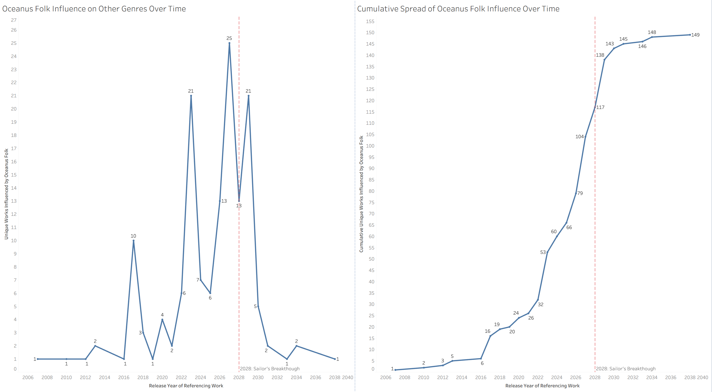
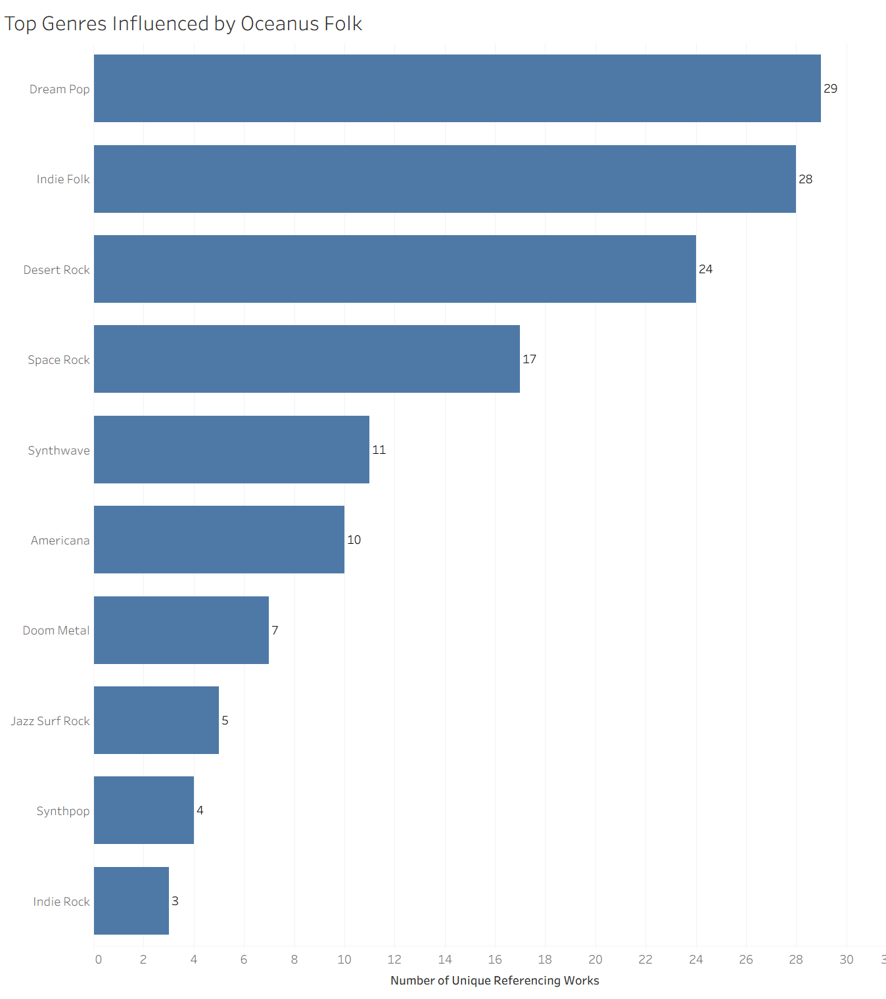
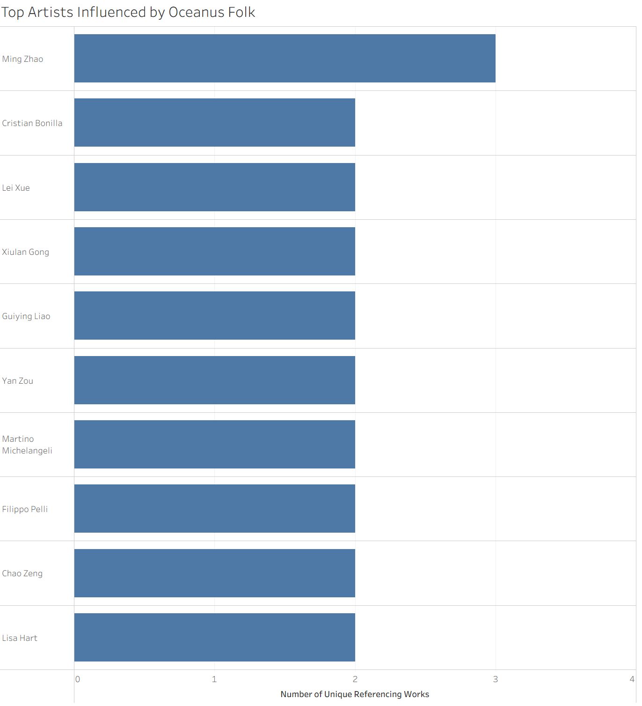
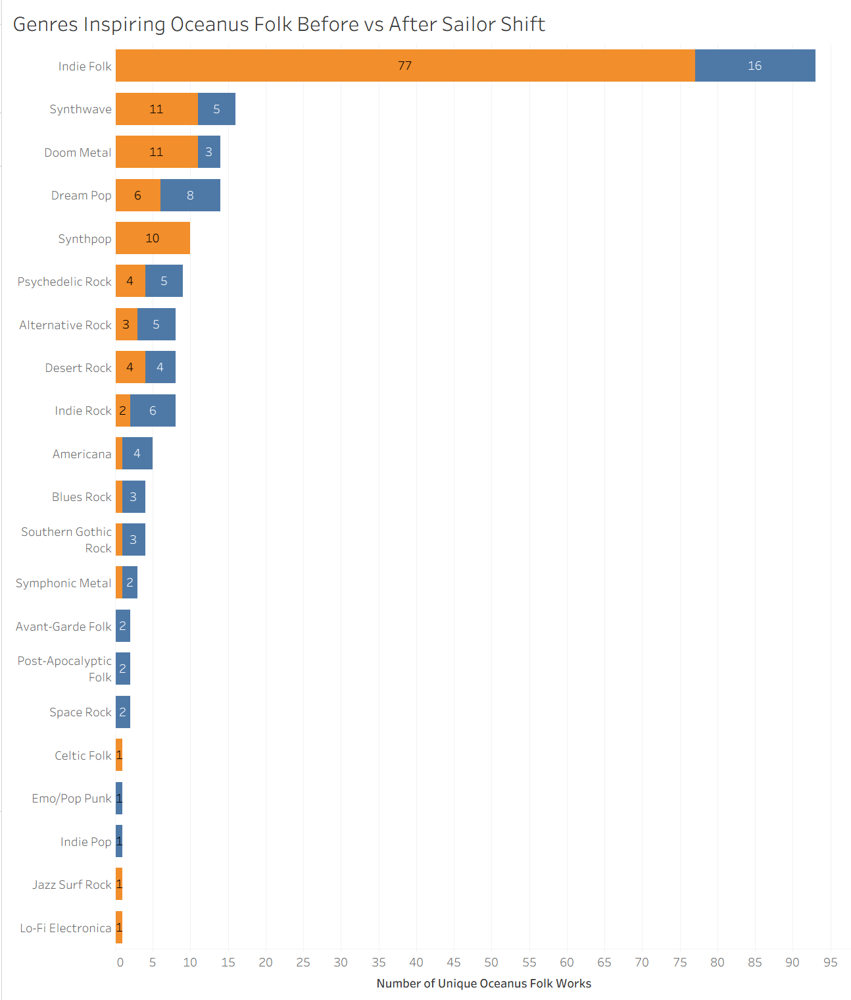
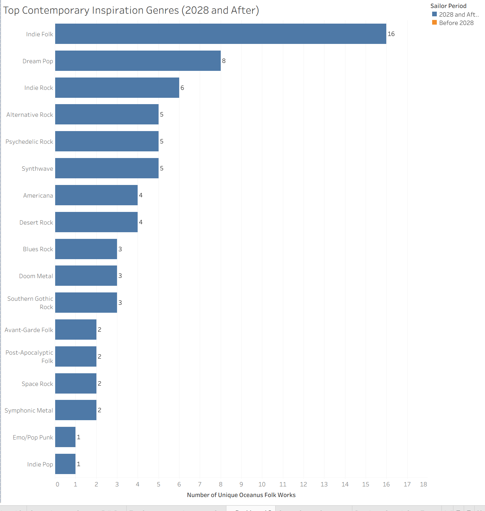
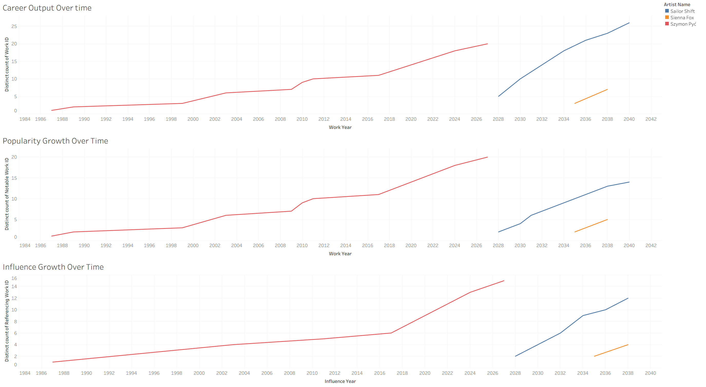
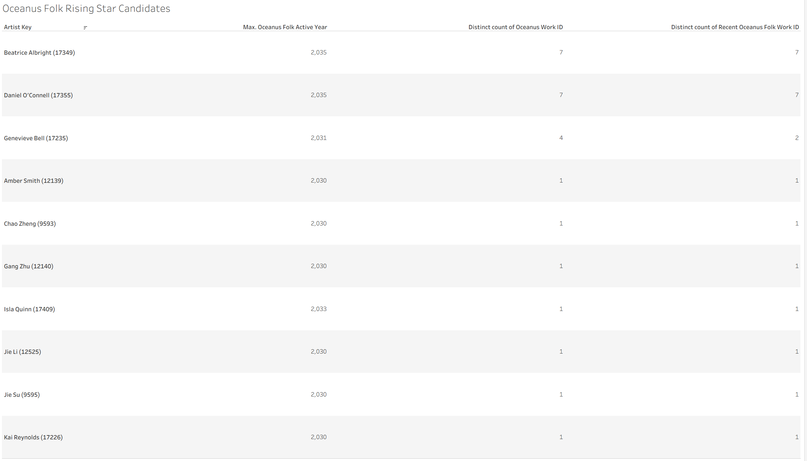

User Guide
Overview
This guide explains how to interact with the interactive network graph generated for this project and provides technical instructions on how to embed the exported Sigma.js HTML file into a Quarto website.
Part 2: Using the Question 2 Dashboard — Spread and Evolution of Oceanus Folk
This dashboard explains how Oceanus Folk spread through the wider music industry, which genres and artists were most influenced by it, and how the genre itself changed after the rise of Sailor Shift.
Dashboard Components
The Question 2 dashboard is divided into three main analytical views:
- Influence Over Time: shows whether Oceanus Folk spread gradually or in bursts.
- Top Genres and Artists Influenced by Oceanus Folk: shows which genres and artists most frequently adopted Oceanus Folk influence.
- Genres Inspiring Oceanus Folk (Before vs After Sailor Shift): shows how Oceanus Folk’s own inspirations changed before and after Sailor Shift’s 2028 breakthrough.
How to Read the Dashboard
1. Influence Over Time

This section usually contains: * a yearly trend line showing the number of unique works influenced by Oceanus Folk each year * a cumulative line showing how Oceanus Folk influence built up over time
How to use it: * Hover over each point to see the year and value. * Look for whether the line rises steadily or shows sudden spikes. * Use the annotated 2028 reference line (if included) to compare the spread before and after Sailor Shift’s breakthrough.
What it helps answer: * Was Oceanus Folk influence gradual or intermittent? * Did its spread accelerate after Sailor Shift’s rise?
2. Top Genres Influenced by Oceanus Folk

This section ranks the genres whose works most frequently reference or borrow from Oceanus Folk.
How to use it: * Hover over each bar to see the genre name and count. * Compare the bar lengths to identify which genres were influenced most strongly. * Read the highest-ranked genres first to identify the main receiving communities.
What it helps answer: * Which genres most strongly adopted Oceanus Folk? * Did the genre mostly spread to similar folk-based genres, or did it expand into more distant styles?
3. Top Artists Influenced by Oceanus Folk

This section ranks artists whose works show the strongest Oceanus Folk influence.
How to use it: * Hover over a bar to view the artist name and number of influenced works. * Where available, use the filter panel to focus on solo artists or compare across all performers. * Interpret the bars as showing distinct influenced works, not just raw reference counts.
What it helps answer: * Which artists most strongly absorbed Oceanus Folk into their own music? * Is the influence concentrated in a few artists or spread across many?
4. Genres Inspiring Oceanus Folk Before vs After Sailor Shift

This section compares the genres that influenced Oceanus Folk before 2028 and from 2028 onward.
How to use it: * Use the color legend to distinguish Before 2028 and 2028 and After. * Compare the two bars for each genre to see whether that inspiration source increased or decreased after Sailor Shift’s rise. * Read from top to bottom to see which genres remained dominant and which newly emerged.
What it helps answer: * How did Oceanus Folk change after Sailor Shift became successful? * Which genres are its strongest contemporary inspirations?
5. Top Contemporary Inspiration Genres

This section isolates the post-2028 period and ranks the genres most strongly influencing Oceanus Folk in the present era.
How to use it: * Hover over each bar for the exact count. * Focus on the top few genres to identify the clearest present-day inspiration sources. * Use this together with the before/after chart to distinguish long-term roots from newer influences.
Suggested Interpretation Flow for Question 2
A good way to explore the Question 2 dashboard is:
- Start with Influence Over Time to understand whether the spread was gradual or intermittent.
- Move to Top Genres Influenced by Oceanus Folk to see where the influence spread outward.
- Check Top Artists Influenced by Oceanus Folk to identify the human side of that spread.
- Finish with Genres Inspiring Oceanus Folk Before vs After Sailor Shift to understand how the genre evolved internally.
Part 3: Using the Question 3 Dashboard — Rising Star Profile and Prediction
This dashboard compares the careers of three artists to define what a rising star looks like in the dataset, then uses that profile to predict the next Oceanus Folk stars.
Dashboard Components
The Question 3 dashboard is divided into four main views:
- Career Output Over Time
- Popularity Growth Over Time
- Influence Growth Over Time
- Oceanus Folk Rising Star Candidates
How to Read the Dashboard

1. Career Output Over Time
This chart shows how each selected artist’s body of work grows over time.
How to use it: * Hover over a point on the line to see the year and cumulative number of works. * Compare the steepness of each line: * a steeper line means faster output growth * a flatter line means slower or more gradual output growth * Use the legend to identify which line belongs to which artist.
What it helps answer: * Which artist had the fastest career expansion? * Which artist built their catalog more steadily over time?
2. Popularity Growth Over Time
This chart shows the cumulative growth of notable works over time.
How to use it: * Hover over each point to see the cumulative number of notable works. * Compare how quickly the lines rise: * a fast-rising line indicates rapid recognition * a slow-rising line suggests more gradual visibility * Compare this chart with the output chart to see whether high productivity is translating into recognition.
What it helps answer: * Which artists converted their releases into recognition most effectively? * Did popularity rise gradually or through breakout moments?
3. Influence Growth Over Time
This chart shows how much each artist influenced later works by others.
How to use it: * Hover over each point to see cumulative referencing works. * Compare the slope of the lines: * a steep line indicates faster growth in influence * a slow line indicates slower or longer-term accumulation of impact * Compare this chart with the popularity chart to see whether influence follows after recognition.
What it helps answer: * Which artist’s work began influencing others most strongly? * Did influence grow immediately, or only after popularity increased?
4. Oceanus Folk Rising Star Candidates

This table ranks recent Oceanus Folk artists using measures such as: * total Oceanus Folk works * recent Oceanus Folk works * recent notable Oceanus Folk works * latest active year
How to use it: * Read the table from top to bottom after sorting by recent Oceanus Folk activity. * Use Recent Notable Oceanus Folk Works as the main indicator of current breakout potential. * Use Recent Oceanus Folk Works and Max Active Year as supporting indicators of momentum and recency. * Exclude Sailor Shift when focusing on “next-generation” predictions, since she is already the benchmark star.
What it helps answer: * Which Oceanus Folk artists currently show the strongest recent momentum? * Who best fits the rising-star profile developed from the three comparison charts?
Suggested Interpretation Flow for Question 3
A good way to explore the Question 3 dashboard is:
- Begin with Career Output Over Time to compare release momentum.
- Move to Popularity Growth Over Time to see how recognition developed.
- Use Influence Growth Over Time to compare broader industry impact.
- Finally, check the Oceanus Folk Rising Star Candidates table to identify who best matches the rising-star profile.
General Interaction Tips for Tableau Dashboards
If the dashboard is embedded from Tableau, the following controls may be available:
- Hovering: reveals detailed values in the tooltip.
- Clicking a bar or line: may highlight or filter related data in the dashboard.
- Legend selection: allows you to isolate a category or artist visually.
- Toolbar options: depending on the embed, you may be able to use fullscreen, download, or share features.
- Resetting the view: click outside the selected mark or use the Tableau reset/revert option if available.